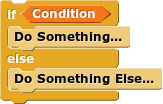
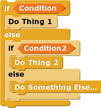

In Python, conditional statements consist of "if", "if-else", and "if-elif-else":
|
|
|
 |
|
 |
For example:
(Don't worry too much of what def means for now, that is how you define a new function in Python. We will go more in-depth later.)
def hi(x):
if (x % 2 == 0):
print("Hello, your number was even")
else:
print("Hello, your number was odd")
>>> x = 6
>>> hi(x)
Hello, your number was even
>>> hi(9)
Hello, your number was odd
# Returns true if X is 0 or odd, otherwise returns false.
def check_zero_or_odd(x):
if (x % 2 == 0):
return True
elif (x == 0):
return True
else:
return False
>>> x = 0
>>> check_zero_or_odd(x)
True
>>> x += 1
>>> check_zero_or_odd(x)
True
>>> x += 3
>>> check_zero_or_odd(x)
False